21th. GoldEx World（金鯖2026）
日本のイベント攻略 ＞ 21th. GoldEx World（金鯖2026）
■期間と金鯖の基本ルール
開催：2026年7月23日（木）メンテナンス後～9月15日（火）メンテナンス前。早期終了により、当初の9月17日から変更されています。コイン交換・真夏の宝探し・おかえり支援なども9月15日までです。
| 項目 | 内容 |
|---|---|
| 育成上限 | Lv1500、5次転生まで。作成できるキャラクターは3体 |
| 基本経験値 | Lv1～1250は51倍、Lv1250～1500は4.5倍 |
| ドロップ率 | 全Lv帯で2倍 |
| 利用できるもの | 協会アイテム購入・協会装備錬成・協会オプション |
| 利用できないもの | デリン＆ダリンのチュートリアル、ミッションブック、ディメンション・ハブ、多次元の結晶、クリーチャー冒険、緊急召集、潜在能力発現、位相征服者・位相兵、生霊の牢屋 |
| 転生称号効果 | 金鯖では無効。一般ワールド移行時はチュートリアルがクリア済みとなる |
■育成とLv達成報酬
高Lv帯では基本経験値倍率が4.5倍になります。金鯖限定のフェーズストーンはLv1から利用でき、錬成のインゴット消費はありません。触媒はキャラクター作成時とLv達成パッケージで受け取ります。
錬成は冒険家協会本部のナギ・タニア（68,25）またはミニマップのアイコンから。適用段階はF3のフェーズストーン欄で確認します。
Lv達成パッケージ
| 達成レベル | アイテムリスト | アイテム情報 |
|---|---|---|
| 1レベル | 効果・使用条件 | |
| 1レベル | 冒険家協会の交換用コイン。 取引不可 | |
| 1レベル | HP・CPを80%回復。 | |
| 1レベル | 効果・使用条件 | |
| 100レベル | 効果・使用条件 | |
| 100レベル | 祈りのカケラ ×200 | 効果・使用条件 取引不可 金鯖限定のため、銀行取引不可 |
| 100レベル | フェーズストーンの錬成素材。 取引不可 | |
| 100レベル | HP・CPを80%回復。 | |
| 300レベル | 効果・使用条件 | |
| 300レベル | 祈りのカケラ ×800 | 効果・使用条件 取引不可 金鯖限定のため、銀行取引不可 |
| 300レベル | HP・CPを80%回復。 | |
| 500レベル | 効果・使用条件 | |
| 500レベル | 冒険家協会の交換用コイン。 取引不可 | |
| 500レベル | フェーズストーンの錬成素材。 取引不可 | |
| 500レベル | HP・CPを80%回復。 | |
| 700レベル | 効果・使用条件 | |
| 700レベル | 祈りのカケラ ×1500 | 効果・使用条件 取引不可 金鯖限定のため、銀行取引不可 |
| 700レベル | 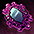 ひび割れた邪念 ×5 | 効果・使用条件 取引不可、銀行保管不可 破棄不可 |
| 700レベル | HP・CPを80%回復。 | |
| 900レベル | 異界強化などに使う素材。 取引不可 銀行保管不可 | |
| 900レベル | フェーズストーンの錬成素材。 取引不可 | |
| 900レベル | HP・CPを80%回復。 |
経験値効果の組合せ
| 区分 | 経験値増加効果 | Lv1~1250 | Lv1250~1500 | 備考 |
|---|---|---|---|---|
| A | 基本ブースト経験値 | 5100% | 450% | |
| B | スフィアー + パワーキット | 300% | 300% | スフィアーの経験値増加効果は100%で超越パワーキットはスフィアーを所持している場合200% を足して合計 300% を適用 |
| C | 宝箱 | 200% | 200% | 経験値バフ3段階を基準とした場合 |
| D | RED STONEのオーラ | 500% | 500% | |
| D | クリーチャー経験値 | 10~60% | 10~60% | |
| D | クリーチャー 上級経験値 | 57~120% | 57~120% | |
| D | バッジ | 100% | なし | G共通ブーストバッジの効果で、 600レベルまで適用 |
| D | カーペット | 3~5% | 3~5% | 着用したカーペットの経験値 %によって異なる。 |
| D | コスチューム | 10~20% | 10~20% | |
| D | 指輪 | 1~25% | 1~25% | 着用した指輪の経験値 %によって異なる。 |
| D | ギルド旗 | 5~25% | 5~25% | ギルド旗の経験値増加効果レベルによって異なる。 |
| D | ギルドスキル | 25~50% | 25~50% | ギルドスキルの生体学レベル及びキャラクター転生の段階によって異なる。 |
| D | 復帰者 | 200% | 200% |
基本倍率・スフィアー等・宝箱のグループを掛け合わせ、同じDグループの効果は合算します。アウラス・スフィアーは有効期間1日。表示される最大倍率は各種アイテムを併用する条件なので、基本倍率だけの育成と分けて考えます。
■イナリスと弁当箱
Lv1250以上で「豊かな畑」から入場。ソロで1日1回です。ボタンが表示されないときはフィールド移動や再接続で確認します。初回は「のりそだ座布団カーペット召喚セット」、討伐で「イナリスのお弁当箱」を獲得します。
弁当箱から5種類の寿司をランダムで獲得。いずれもLv2000未満のモンスター討伐経験値を60分間150%増加させ、他の果実と併用できます。5種類すべての弁当箱を獲得した人を対象に、300名へ金鯖BOX2026を10個配布する抽選もあります。
| 達成条件 | 対象者数 | 配布アイテム |
|---|---|---|
| 5つの種類の弁当箱を獲得 | 300名 |
■硬貨の交換と箱の中身
自分のLv±100のモンスターから硬貨を集め、EVENT SHOPで交換します。銅はLv1～899、銀はLv900～1299、金はLv1300～1500が対象です。通常硬貨と[T]版を区別し、[T]版を使用して対応する硬貨を受け取ります。通常硬貨のスタック上限は999個です。
| ドロップレベル帯 | 硬貨の種類 | アイテム説明 |
|---|---|---|
| 1 ~899 | 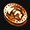 金鯖銅の硬貨[T] | 使用すると金鯖銅の硬貨1枚を獲得。 |
| 1 ~ 899 | 金鯖銅の硬貨 | 箱との交換用通貨。取引・銀行取引不可。 ※999個までスタック可能 |
| 900 ~ 1299 | 金鯖銀の硬貨[T] | 使用すると金鯖銀の硬貨1枚を獲得。 |
| 900 ~ 1299 | 金鯖銀の硬貨 | 箱との交換・金硬貨への変換用通貨。取引・銀行取引不可。 ※999個までスタック可能 |
| 1300 ~ 1500 | 金鯖金の硬貨[T] | 使用すると金鯖金の硬貨1枚を獲得。 |
| 1300 ~ 1500 | 金鯖金の硬貨 | 金の硬貨ランダムボックスとの交換用通貨。取引・銀行取引不可。 ※999個までスタック可能 |
交換レート
| アイテム名 | アイテム説明・必要硬貨数 |
|---|---|
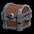 銅の硬貨ランダムボックス | 必要硬貨数: 金鯖銅の硬貨10枚 |
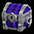 銀の硬貨ランダムボックス | 必要硬貨数: 金鯖銀の硬貨10枚 |
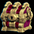 金の硬貨ランダムボックス | 必要硬貨数: 金鯖金の硬貨10枚 |
| 金鯖銀の硬貨 | 必要硬貨数: 金鯖銅の硬貨10枚 |
| 金鯖金の硬貨 | 必要硬貨数: 金鯖銀の硬貨100枚 |
銅10枚→銀1枚、銀100枚→金1枚。金の箱1個には金10枚が必要で、銀から作ると1000枚分です。同じ銀1000枚なら銀の箱100個にも交換できます。欲しい内容がどちらの箱にあるかを見て選びます。
銅の硬貨ランダムボックス
| アイテム名 | アイテム説明 |
|---|---|
| 冒険家協会の交換用コイン。 ※ 取引不可、銀行取引不可 | |
| 冒険家協会の交換用コイン。 ※ 取引不可、銀行取引不可 | |
| 冒険家協会の交換用コイン。 ※ 取引不可、銀行取引不可 | |
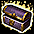 金鯖ユニークボックス x1 | 効果・使用条件 |
銀の硬貨ランダムボックス
| アイテム名 | アイテム説明 |
|---|---|
| 効果・使用条件 | |
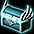 金鯖1100レベルの DXユニークBOX x1 | 効果・使用条件 |
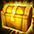 金鯖775レベルの ULTユニークBOX x1 | 効果・使用条件 |
| ランダムなオプションのお守りを獲得。お守りの付与には成功・失敗がある。 | |
| 錬成素材。クリーチャー経験値の育成素材としても使用可能。 | |
| スロット再錬成道具箱 x1 | Nxユニークのスロットを再錬成する道具。 |
| 封印された力を解放。失敗しても既存の解放を維持するレプリカ。 | |
| 解放済みのNxオプションをランダムに変換するレプリカ。 | |
| 装備の能力を強化する石。 | |
| 異界強化などに使う素材。 ※ 取引不可 |
金の硬貨ランダムボックス
| アイテム名 | アイテム説明 |
|---|---|
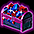 金鯖DXユニークBOX[A] x1 | 効果・使用条件 |
| 金鯖775レベルの ULTユニークBOX x1 | 効果・使用条件 |
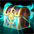 金鯖1000レベルの ULTユニークBOX x1 | 効果・使用条件 |
| ランダムなオプションのお守りを獲得。お守りの付与には成功・失敗がある。 | |
| 効果・使用条件 | |
| 錬成素材。クリーチャー経験値の育成素材としても使用可能。 ※ 破壊不可、銀行取引不可 | |
| スロット再錬成道具箱 x1 | Nxユニークのスロットを再錬成する道具。 |
| Nxユニークの封印オプションを10%で1つ解放。失敗時はオプション数を変更しない。 | |
| 封印された力を解放。失敗しても既存の解放を維持するレプリカ。 | |
| 解放済みのNxオプションをランダムに変換するレプリカ。 | |
| 解放済みのNxオプションをランダムに変換。 | |
| 装備の能力を強化する石。 | |
| 異界強化に使用する強化石。 |
■真夏の宝探し
公式サイトにログインして真夏の宝探しの特設ページを開き、1日1回クリックします。毎回「金鯖デイリーBOX2026」、累計回数に応じて「金鯖BOX2026」を受け取ります。ゲーム内の接続だけでは受領できません。
| 累計回数 | 獲得個数 |
|---|---|
| 1回 | 1個 |
| 3回 | 3個 |
| 5回 | 3個 |
| 7回 | 3個 |
| 14回 | 5個 |
| 21回 | 5個 |
| 28回 | 10個 |
28回まで進めると、日次BOX28個に加えて累計の金鯖BOX30個を獲得できます。累計28回以降の日次受取も9月15日の終了前までに済ませます。
金鯖デイリーBOX2026：★2
| アイテム名 | 個数 | アイテム詳細 |
|---|---|---|
| 1 | アイテムをランダムで獲得するBox。 | |
| 1 | ミニペットを1体召喚。契約期間30日。銀行取引不可。 | |
| 1 | コスチューム強化・合成の素材。銀行取引不可。 | |
| 1 | 効果・使用条件 ※取引不可 | |
| 1 | レイド経験値をLv1～849は2倍、850～1999は6倍にする。Lv2000以上は経験値を得ず消費。 ※取引不可 |
金鯖デイリーBOX2026：★1
| アイテム名 | 個数 | アイテム説明 |
|---|---|---|
| 1 | クリーチャーのマナ30個分。 | |
| 1 | 10分間CPを最大値に維持。同効果の重複使用不可。 | |
| 1 | 冒険用アイテムをランダムで獲得。 | |
| 1 | クリーチャー経験値の育成素材。銀行取引不可。 | |
| 1 | Lv2000未満のモンスター討伐経験値を60分間150%増加。他の果実と併用可能。銀行取引不可。 | |
| 1 | 錬成素材。クリーチャー経験値の育成素材としても使用可能。 | |
| 1 | ペブルコクーン3個のセット。 | |
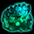 下級モンスターの霊珠 | 1 | 効果・使用条件 ※取引不可 |
| 1 | クリーチャーの餌と併用し獲得経験値を増加。必要数は餌によって異なる。 | |
| 1 | 指定した場所へ移動。 |
金鯖BOX2026：★3
| アイテム名 | 個数 | アイテム説明 |
|---|---|---|
| 1 | チケットをランダムで獲得するBox。 | |
| 1 | アイテムをランダムで獲得するBox。 | |
| 1 | アイテムをランダムで獲得するBox。 | |
| 1 | インベントリを4枠拡張。満杯の状態で使用しない。 | |
| 1 | 効果・使用条件 | |
| 1 | 効果・使用条件 |
金鯖BOX2026：★2
| アイテム名 | 個数 | アイテム説明 |
|---|---|---|
| 1 | インベントリを2枠拡張。満杯の状態で使用しない。 | |
| 1 | ネフォンクリーチャーを1体召喚。銀行取引不可。 | |
| 1 | 製錬失敗時の保護用。1～10段階はLv低下なし、11～20段階はアイテム消滅なし。銀行取引不可。 | |
| 1 | ミニペットを1体召喚。契約期間30日。銀行取引不可。 | |
| 1 | ネフォンクリーチャーをランダムで召喚。銀行取引不可。 | |
| 1 | アイテムをランダムで獲得するBox。 | |
| 1 | コスチューム強化・合成の素材。銀行取引不可。 | |
| 1 | 効果・使用条件 ※取引不可 | |
| 1 | レイド経験値をLv1～849は2倍、850～1999は6倍にする。Lv2000以上は経験値を得ず消費。 ※取引不可 |
金鯖BOX2026：★1
| アイテム名 | 個数 | アイテム説明 |
|---|---|---|
| 1 | プチダリンを召喚。銀行取引不可。 | |
| 1 | プチデリンを召喚。銀行取引不可。 | |
| 1 | クリーチャーのマナ30個分。 | |
| 1 | 10分間CPを最大値に維持。同効果の重複使用不可。 | |
| 1 | 冒険用アイテムをランダムで獲得。 | |
| 1 | クリーチャー経験値の育成素材。銀行取引不可。 | |
| 1 | Lv2000未満のモンスター討伐経験値を60分間150%増加。他の果実と併用可能。銀行取引不可。 | |
| 1 | 錬成素材。クリーチャー経験値の育成素材としても使用可能。 | |
| 1 | ペブルコクーン3個のセット。 | |
| 下級モンスターの霊珠 | 1 | 効果・使用条件 ※取引不可 |
| 1 | クリーチャーの餌と併用し獲得経験値を増加。必要数は餌によって異なる。 | |
| 1 | 指定した場所へ移動。 |
■新規・復帰支援とミッション
新規登録・アカウント復旧の支援品は買い物カゴで受け取ります。期限付きの道具は使う日に引き出し、Gシリーズは金鯖の中で使います。
新規登録
| アイテム名 | 個数 | アイテム詳細 |
|---|---|---|
| 1 | 有効期間7日。買い物カゴから出した時点で期限を設定。 ※取引不可です。 ※買い物カゴから出すと有効期限が設定されます。 | |
| 9 | 有効期間1時間。買い物カゴから出した時点で期限を設定。 ※取引不可です。 ※買い物カゴから出すと有効期限が設定されます。 | |
| 5 | 有効期間3時間。買い物カゴから出した時点で期限を設定。 ※取引不可です。 ※買い物カゴから出すと有効期限が設定されます。 | |
| 1 | インベントリを2枠拡張。満杯の状態で使用しない。 | |
| 1 | HP100%即時回復のポーション50個のセット。連続使用不可。 | |
| 5 | 10分間CPを最大値に維持。同効果の重複使用不可。 |
アカウント復旧
| アイテム名 | 個数 | アイテム詳細 |
|---|---|---|
| Gポータル・スフィアー[7日版] | 1 | GoldEx専用。期間7日。買い物カゴから出した時点で期限を設定。通常ワールドでは効果なし。 ※取引不可 ※買い物カゴから出すと有効期限が設定されます。 |
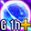 Gポータル・パワーキット[1時間版] | 5 | GoldEx専用。期間1時間。買い物カゴから出した時点で期限を設定。通常ワールドでは効果なし。 ※取引不可 ※買い物カゴから出すと有効期限が設定されます。 |
| 1 | 有効期間7日。買い物カゴから出した時点で期限を設定。 ※買い物カゴから出すと有効期限が設定されます。 | |
| 1 | 効果・使用条件 | |
| 3 | 効果・使用条件 | |
| 3 | ミニペット2体を同時に活性化。期間3日。銀行取引不可。 | |
| 1 | 対象のSRクリーチャーから選択。 | |
| 1 | インベントリを4枠拡張。満杯の状態で使用しない。 | |
| 2 | HP100%即時回復のポーション50個のセット。連続使用不可。 | |
| 5 | 10分間CPを最大値に維持。同効果の重複使用不可。 |
GMギルド支援
GMギルドではギルドスキル・バフの支援を利用できます。経験値や旗など、所属先で有効な効果を確認してから狩りへ出ます。
| スキル名 | スキル詳細 | 適用レベル |
|---|---|---|
| 広告業 | ギルドを大勢に広告する技術。より多くのギルドメンバーを募集する事ができる。200人まで可能。 | 19レベル |
| 不動産 | 不動産を研究してギルドの縁故地を増やすことができる。縁故地が増えるとギルドホールに接近できる町が増える。縁故地に支払う土地代金も別途必要となる。 | 2レベル |
| ボディービルディング | ギルドメンバーが肉体を鍛錬できるスキル。 ギルドメンバーが肉体を鍛錬できるスキル。 | 4レベル |
| 精神修養 | ギルドメンバーが精神を鍛錬できるスキル。ギルドメンバーの最大CPが増加する。 | 4レベル |
| 攻撃基礎修練 | ギルドメンバーが攻撃正確度を鍛錬できるスキル。 ギルドメンバーが攻撃正確度を鍛錬できるスキル。 | 4レベル |
| 戦士の目修練 | ギルドメンバーが戦士として目を鍛錬できるスキル。 ギルドメンバーが戦士として目を鍛錬できるスキル。 | 4レベル |
| 生体学 - 序文 | 転生者について、生体研究を通じて転生経験がない、200レベル未満のギルドメンバーの獲得経験値を増加させる。 | 3レベル |
| 生体学 - 1章 | 転生者について、生体研究を通じて1次転生した2000レベル未満のギルドメンバーの獲得経験値を増加させる。 | 3レベル |
| 生体学 - 2章 | 転生者について、生体研究を通じて2次転生した2000レベル未満のギルドメンバーの獲得経験値を増加させる。 | 3レベル |
| 生体学 - 3章 | 転生者について、生体研究を通じて3次転生した2000レベル未満のギルドメンバーの獲得経験値を増加させる。 | 3レベル |
| 生体学 - 4章 | 転生者について、生体研究を通じて4次転生した2000レベル未満のギルドメンバーの獲得経験値を増加させる。 | 3レベル |
| 生体学 - 5章 | 転生者について、生体研究を通じて5次転生した2000レベル未満のギルドメンバーの獲得経験値を増加させる。 | 3レベル |
| 力強化 | ギルドメンバーの力が増加する。 | 3レベル |
| 敏捷強化 | ギルドメンバーの敏捷が増加する。 | 3レベル |
| 健康増加 | ギルドメンバーの健康が増加する。 | 3レベル |
| 知識増加 | ギルドメンバーの知識が増加する。 | 3レベル |
| 知恵増加 | ギルドメンバーの知恵が増加する。 | 3レベル |
| カリスマ増加 | ギルドメンバーのカリスマが増加する。 | 3レベル |
| 運増加 | ギルドメンバーの運が増加する。 | 3レベル |
| 瞑想術 | ギルドメンバーの精神を鍛錬するスキル。どんな状況でも動揺しない精神力は、フィールド入場時に低下したステータスを回復させる。 | 3レベル |
| 思想教育 | ギルドメンバーの意志を鍛錬するスキル。何物にも屈しない鉄の意志は、低下した最大属性抵抗値を回復させる。 | 3レベル |
| 騎士道 | ギルドメンバーの剣士スキルレベルが増加する。 | 0レベル |
| 戦術 | ギルドメンバーの戦士スキルレベルが増加する。 | 0レベル |
| ウィザードリィ | ギルドメンバーのウィザードスキルレベルが増加する。 | 0レベル |
| ライカントロピー | ギルドメンバーのウルフマンスキルレベルが増加する。 | 0レベル |
| 狂信 | ギルドメンバーのビショップスキルレベルが増加する。 | 0レベル |
| 天使階級学 | ギルドメンバーの追放天使スキルレベルが増加する。 | 0レベル |
| 七つ道具 | ギルドメンバーのシーフスキルレベルが増加する。 | 0レベル |
| 気功術 | ギルドメンバーの武道家スキルレベルが増加する。 | 0レベル |
| 偵察術 | ギルドメンバーのアーチャースキルレベルが増加する。 | 0レベル |
| 傭兵術 | ギルドメンバーのランサースキルレベルが増加する。 | 0レベル |
| 精霊学 | ギルドメンバーのサマナースキルレベルが増加する。 | 0レベル |
| 調練学 | ギルドメンバーのビーストテイマースキルレベルが増加する。 | 0レベル |
| 宮廷礼節 | ギルドメンバーのプリンセススキルレベルが増加する。 | 0レベル |
| 天文学 | ギルドメンバーのリトルウィッチスキルレベルが増加する。 | 0レベル |
| 降神術 | ギルドメンバーのネクロマンサースキルレベルが増加する。 | 0レベル |
| 悪魔学 | ギルドメンバーの悪魔スキルレベルが増加する。 | 0レベル |
| 心霊術 | ギルドメンバーの霊術師スキルレベルが増加する。 | 0レベル |
| 闘魂学 | ギルドメンバーの闘士スキルレベルが増加する。 | 0レベル |
| 分光学 | ギルドメンバーの光奏師スキルレベルが増加する。 | 0レベル |
| 掃除技術 | ギルドメンバーのメイドスキルレベルが増加する。 | 0レベル |
| 双剣術 | ギルドメンバーの獣人スキルレベルが増加する。 | 0レベル |
| 闇魔法学 | ギルドメンバーの黒魔術師スキルレベルが増加する。 | 0レベル |
| 射撃術 | ギルドメンバーのマスケッティアスキルレベルが増加する。 | 0レベル |
| ポーション調合術 | ギルドメンバーのアルケミストスキルレベルが増加する。 | 0レベル |
| 航海術 | ギルドメンバーのキャプテンスキルレベルが増加する。 | 0レベル |
| 砲撃術 | ギルドメンバーのキャニアスキルレベルが増加する。 | 0レベル |
| バフ名 | ハブ詳細 | バフレベル |
|---|---|---|
| 経験値増加 | 2000レベル未満プレイヤーの狩り経験値を増加させる。 | 0レベル |
| アイテムドロップ率増加 | アイテムのドロップ率増加 | 0レベル |
| ユニークドロップ率増加 | ユニークアイテムのドロップ率増加 | 0レベル |
| DXユニークドロップ率増加 | DXユニークアイテムのドロップ率増加 | 0レベル |
| 移動速度増加 | 自分と召喚獣の移動速度増加 | 0レベル |
| 物理攻撃力増加 | 自分と召喚獣の攻撃力を増加 | 0レベル |
| 魔法攻撃力増加 | 自分と召喚獣の魔法攻撃力を増加 | 0レベル |
| 攻撃速度増加 | 自分と召喚獣の攻撃速度増加 | 0レベル |
| ターゲットの全属性低下 | 自分と召喚獣の攻撃する相手の属性を低下 | 0レベル |
| 追加火属性ダメージ | 自分と召喚獣の攻撃時、追加火属性ダメージが発生 | 0レベル |
| 防御力増加 | 自分と召喚獣の防御力を増加 | 0レベル |
| HP自動回復量増加 | 自分と召喚獣のHP自動回復 | 0レベル |
| 回避率増加 | 自分と召喚獣の回避率を増加 | 0レベル |
| 最大HP増加 | 自分と召喚獣の最大HPを増加 | 0レベル |
| 魔法属性抵抗力増加 | 自分と召喚獣の魔法属性抵抗力を増加 | 0レベル |
金鯖のチャット支援
一般チャットで「イナリス討伐に挑戦！」と発言すると暖かい言葉の支援を受けられます。1時間持続し、ログアウトで消失。優しい言葉の支援との同時発動はできません。9月15日の終了まで金鯖で利用でき、導きの鐘は期間中使用できません。
| 支援 | 効果 |
|---|---|
| 暖かい言葉の支援 | 回避率＋17%、火ダメージ48～480、魔法攻撃時に闇属性追加144～144、防御力＋140%、攻撃速度＋45%、移動速度＋125%、最大HP＋158% |
| 優しい言葉の支援 | アイテムドロップ率＋130%、Goldドロップ率＋150%、攻撃速度＋35%、移動速度＋95%、スキルLv＋3、HP回復200/10秒 |
パーティーチャットやキーワード前後に文字を足した発言は対象外。混沌・秘密・ギルドダンジョン・試練・ポイント戦・攻城戦のマップでは付与されません。PvPマップ入場時も効果が消えます。メリスリングへ入る前に発言し、上位スキルによる同種効果の上書きにも合わせます。
金鯖スペシャルミッション
各ミッションを達成したアカウントから、下表の人数を抽選します。
| 達成条件 | 対象者数 | 配布アイテム |
|---|---|---|
| 「累計ログイン」3日以上 | 1000名 | |
| 「協会オプション」5個以上使用 | 1000名 | |
| 「協会オプション」5個以上使用 | 1000名 | |
| 「レベル達成パッケージ[900]レベル」使用 | 1000名 | |
| 「レベル達成パッケージ[900]レベル」使用 | 1000名 | |
| 「ユニークアイテム」10個以上獲得 | 500名 | 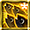 金鯖の群れポケットベル[3日版] x1 |
| 「ユニークアイテム」10個以上獲得 | 500名 | |
| 「金鯖銀の硬貨」50個以上獲得 | 100名 | |
| 「金鯖銀の硬貨」50個以上獲得 | 100名 | |
| 「イナリスクリア」1回以上 | 10名 | |
| 「イナリスクリア」1回以上 | 10名 |
■思い出のフィールドボス
毎日18:00～24:00の6時間、金鯖限定で下表のボスがLv900帯へ強化されます。経験値・Goldは得られず、指定された装備以外はドロップしません。育成目的の狩場と分けて選びます。
| モンスター名 | 出現するフィールド |
|---|---|
| マミーロード | 地下墓地 Ｂ３(113, 47) |
| アサシン | 路上強盗団アジト Ｂ３(113, 57) |
| コロッサス | 廃坑 Ｂ９(135, 15 外) |
| ガーディアン | やぶ森の中(33, 55) |
| アイテム名 | アイテム詳細 |
|---|---|
| ゴールデンフォームガード | 効果・使用条件 |
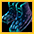 ゴールデンバッサドラッヘ | 効果・使用条件 |
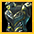 ゴールデンサリーンイントルーダー | 効果・使用条件 |
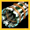 ゴールデンカンニバリスター | 効果・使用条件 |
■一般ワールドへの移行
移行受付：9月15日（火）メンテナンス後～10月1日（木）メンテナンス前。移したい道具は、9月15日のメンテナンス前までに移行するキャラクターのインベントリへ入れます。終了後は金鯖へ接続できません。
| 順番 | 確認すること |
|---|---|
| 終了前 | コインを交換し、所持品と買い物カゴの受取先を整理。持ち帰る道具を移行キャラクターへ |
| 移行先 | シュトラセト・ボルティッシュ・ブリッジヘッドから選択。移行先の空きスロットを確認。上限は17→18枠 |
| 移行操作 | キャラクター選択画面の「ワールド移行」→移行先→確認。1キャラクターにつき1回 |
| 名前変更 | 移行先で仮名を変更。選択画面でLv1と出ても、接続後に正常なLvを表示 |
| 移行後 | Gシリーズは効果なし。フェーズストーンはLv1250達成と関連クエスト完了で有効化 |
■おすすめの進め方
育成はLv1250を境に組み直す
まずLv達成パッケージを順に開けて、触媒・回復品を受け取り、フェーズストーンを利用します。Lv1250からはイナリスを日課へ追加。消耗品の有効時間に合わせ、狩場へ移動してから経験値効果を使います。
銀をすべて金へ変換しない
銀の箱にあるレプリカ系などを狙うなら、金へ変える前に必要分を残します。金の箱の候補が欲しければ、その分の銀を金へ交換する進め方もあります。銀1000枚で「銀の箱100個」か「金の箱1個」になるため、先に中身を見比べると用途を決めやすいです。いずれも抽選なので、必要な装備を必ず揃えられる方法としては扱いません。
終了日前の受取・交換を優先
Webの毎日受取、イナリスの討伐、コイン交換、移行する道具の移動を9月15日までに済ませます。一般ワールドで使えないGシリーズを残すより、金鯖の育成期間に合わせて使い切る形です。